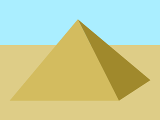

RENDER MODE
canvas
image
div
SIZE:
FILL
BACKGROUND
CONTENT
https://larsjung.de/jquery-qrcode/
MIN VERSION:
ERROR CORRECTION LEVEL
L - Low (7%)
M - Medium (15%)
Q - Quartile (25%)
H - High (30%)
QUIET ZONE:
CORNER RADIUS:
